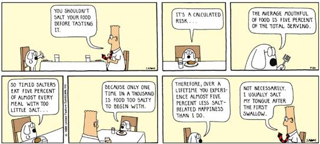

A Hasty Loop
In addition to for and while, C++ has a loop that tests its condition after the loop body completes. The do-while loop always executes the statements inside its body at least once.
do
{
// statements
}
while (condition);The body of the do-while loop appears between the keywords do (which precedes the loop body) and while. The body of the do-while loop can be a single statement, ending with a semicolon, or it can be a compound statement enclosed in braces.
In the do-while loop, the condition is followed by a semicolon, unlike the while loop, where following the condition with a semicolon leads to subtle, hard tofind bugs.
The do-while loop is often employed by beginning programmers because it seems more natural. If you find yourself in this situation, think twice. 99% of the time, a while loop or a for loop is a better choice than a do-while. In fact, except for salting your food...

which should always be done before tasting, there are relatively few other situations where a test-at-the-bottom strategy is superior to "looking before you leap." This course content is offered under a
CC
Attribution Non-Commercial license. Content in this course
can be considered under this license unless otherwise noted.
This course content is offered under a
CC
Attribution Non-Commercial license. Content in this course
can be considered under this license unless otherwise noted.